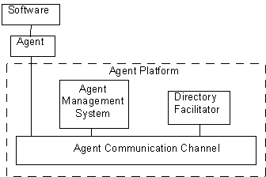
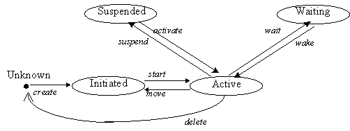
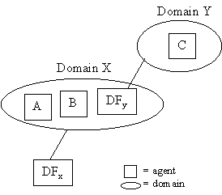
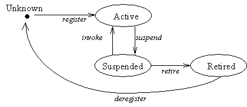

Contents
1
Scope...........................................................................................................................................................
2 Normative reference(s)..................................................................................................................................
3 Terms and definitions...................................................................................................................................
4 Symbols (and abbreviated terms).................................................................................................................
5 Overview......................................................................................................................................................
6 Reference Model...........................................................................................................................................
6.1 Agent.........................................................................................................................................................
6.2 Directory Facilitator (DF)............................................................................................................................
6.2.1 Actions Supported by the DF..................................................................................................................
6.2.2 Reserved Constants in Ontology for the DF.............................................................................................
6.3 Agent Management System (AMS).............................................................................................................
6.3.1 Actions Supported by the AMS...............................................................................................................
6.3.2 Reserved Constants in Ontology for the AMS..........................................................................................
6.4 Agent Communication Channel (ACC)........................................................................................................
6.4.1 Actions Supported by the ACC................................................................................................................
6.4.2 Reserved Constants in Ontology for the ACC..........................................................................................
6.5 Software....................................................................................................................................................
7 The Agent Platform (AP)...............................................................................................................................
7.1 Overview....................................................................................................................................................
7.2 Relationship between key entities within AP..............................................................................................
7.3 The Home Agent Platform..........................................................................................................................
7.4 Agent Registration on an AP......................................................................................................................
7.5 The communication act.............................................................................................................................
7.5.1 Agent Communication Channel and Agent
Addressing...........................................................................
7.5.2 Message Routing....................................................................................................................................
7.6 The Agent Platform Life-Cycle....................................................................................................................
7.6.1 State Description.....................................................................................................................................
7.6.2 Transition Description.............................................................................................................................
8 Agent Domain...............................................................................................................................................
8.1 Overview....................................................................................................................................................
8.2 Registering with the Directory Facilitator...................................................................................................
8.3 The domain life-cycle.................................................................................................................................
8.3.1 State Descriptions...................................................................................................................................
8.3.2 Transition Descriptions...........................................................................................................................
9 FIPA Agent Management Ontology...............................................................................................................
9.1 Agent Management Grammar.....................................................................................................................
9.2 Agent Platform Actions..............................................................................................................................
9.2.1 register...................................................................................................................................................
9.2.2 search.....................................................................................................................................................
9.2.3 modify....................................................................................................................................................
9.2.4 deregister................................................................................................................................................
9.2.5 register-agent..........................................................................................................................................
9.2.6 deregister-agent......................................................................................................................................
9.2.7 modify-agent...........................................................................................................................................
9.2.8 authenticate............................................................................................................................................
9.2.9 forward...................................................................................................................................................
9.3 Agent Management Objects.......................................................................................................................
9.3.1 fipa-man-df-agent-description..................................................................................................................
9.3.2 fipa-man-platform-profile.........................................................................................................................
9.3.3 fipa-man-service-description...................................................................................................................
9.3.4 fipa-man-ams-agent-description..............................................................................................................
9.3.5 fipa-man-exception..................................................................................................................................
Foreword
The Foundation for Intelligent Physical Agents
(FIPA) is a non-profit association registered in Geneva, Switzerland. FIPA’s
purpose is to promote the success of emerging agent-based applications,
services and equipment. This goal is pursued by making available in a timely
manner, internationally agreed specifications that maximise interoperability
across agent-based applications, services and equipment. This is realised
through the open international collaboration of member organisations, which are
companies and universities active in the agent field. FIPA intends to make the
results of its activities available to all interested parties and to contribute
the results of its activities to appropriate formal standards bodies.
This specification has been developed through
direct involvement of the FIPA membership. The 35 corporate members of FIPA
(October 1997) represent 12 countries from all over the world
Membership in FIPA is open to any corporation
and individual firm, partnership, governmental body or international
organisation without restriction. By joining FIPA each Member declares himself
individually and collectively committed to open competition in the development
of agent-based applications, services and equipment. Associate Member status is
usually chosen by those entities who do want to be members of FIPA without
using the right to influence the precise content of the specifications through
voting.
The Members are not restricted in any way from
designing, developing, marketing and/or procuring agent-based applications,
services and equipment. Members are not bound to implement or use specific
agent-based standards, recommendations and FIPA specifications by virtue of
their participation in FIPA.
This specification is published as FIPA 97
ver. 1.0 after two previous versions have been subject to public comments
following disclosure on the WWW. It has undergone intense review by members as
well non-members. FIPA is now starting a validation phase by encouraging its
members to carry out field trials that are based on this specification. During
1998 FIPA will publish FIPA 97 ver. 2.0 that will incorporate whatever
adaptations will be deemed necessary to take into account the results of field
trials.
Introduction
This FIPA 97 specification is the first output
of the Foundation for Intelligent Physical Agents. It provides specification of
basic agent technologies that can be integrated by agent systems developers to
make complex systems with a high degree of interoperability.
FIPA specifies the interfaces of the different
components in the environment with which an agent can interact, i.e. humans,
other agents, non-agent software and the physical world. See figure below

FIPA produces two kinds of specification
1)
normative
specifications that mandate the external behaviour of
an agent and ensure interoperability with other FIPA-specified subsystems;
2)
informative specifications of applications for guidance to industry on the use of
FIPA technologies.
The first set of specifications – called FIPA
97 – has seven parts:
1)
three normative parts for basic agent
technologies: agent management, agent communication language and
agent/software integration
2)
four informative application descriptions
that provide examples of how the normative items can be applied: personal
travel assistance, personal assistant, audio-visual entertainment and
broadcasting and network management and provisioning.
Overall, the three FIPA 97 technologies allow:
1)
the construction and management of an
agent system composed of different agents, possibly built by different
developers;
2)
agents to communicate and interact with
each other to achieve individual or common goals;
3)
legacy software or new non-agent software
systems to be used by agents.
A brief illustration of FIPA 97 specification
is given below
Part 1 Agent Management
This part of FIPA 97 provides a normative
framework within which FIPA compliant agents can exist, operate and be managed.
It defines an agent platform reference model
containing such capabilities as white and yellow pages, message routing and
life-cycle management. True to the FIPA approach, these capablities are
themselves intelligent agents using formally sound communicative acts based on
special message sets. An appropriate ontology and content language allows
agents to discover each other’s capabilities.
Part 2 Agent Communication
Language
The FIPA Agent Communication Language (ACL) is
based on speech act theory: messages are actions, or communicative acts, as
they are intended to perform some action by virtue of being sent. The
specification consists of a set of message types and the description of their
pragmatics, that is the effects on the mental attitudes of the sender and
receiver agents. Every communicative act is described with both a narrative
form and a formal semantics based on modal logic.
The specifications include guidance to users
who are already familiar with KQML in order to facilitate migration to the FIPA
ACL.
The specification also provides the normative
description of a set of high-level interaction protocols, including requesting
an action, contract net and several kinds of auctions etc.
Part 3 Agent/Software
Integration
This part applies to any other non-agentised
software with which agents need to “connect”. Such software includes legacy
software, conventional database systems, middleware for all manners of
interaction including hardware drivers. Because in most significant
applications, non-agentised software may dominate software agents, part 3
provides important normative statements. It suggests ways by which Agents may
connect to software via “wrappers” including specifications of the wrapper
ontology and the software dynamic registration mechanism. For this purpose, an
Agent Resource Broker (ARB) service is defined which allows advertisement of
non-agent services in the agent domain and management of their use by other
agents, such as negotiation of
parameters (e.g. cost and priority), authentication and permission.
Part 4 - Personal Travel Assistance
The travel industry involves many components
such as content providers, brokers, and personalization services, typically
from many different companies. In
applying agents to this industry, various implementations from various vendors
must interoperate and dynamically discover each other as different services
come and go. Agents operating on behalf of their users can provide assistance
in the pre-trip planning phase, as well as during the on-trip execution phase.
A system supporting these services is called a PTA (Personal Travel Agent).
In order to accomplish this assistance, the
PTA interacts with the user and with other agents, representing the available
travel services. The agent system is responsible for the configuration and
delivery - at the right time, cost, Quality of Service, and appropriate
security and privacy measures - of trip planning and guidance services. It
provides examples of agent technologies for both the hard requirements of
travel such as airline, hotel, and car arrangements as well as the soft
added-value services according to personal profiles, e.g. interests in sports,
theatre, or other attractions and events.
Part 5 - Personal Assistant
One central class of intelligent agents is
that of a personal assistant (PA). It is a software agent that acts
semi-autonomously for and on behalf of a user, modelling the interests of the
user and providing services to the user or other people and PAs as and when
required. These services include managing a user's diary, filtering and sorting
e-mail, managing the user's activities, locating and delivering (multimedia)
information, and planning entertainment and travel. It is like a secretary, it
accomplishes routine support tasks to allow the user to concentrate on the real
job, it is unobtrusive but ready when needed, rich in knowledge about user and
work. Some of the services may be provided by other agents (e.g. the PTA) or
systems, the Personal Assistant acts as an interface between the user and these
systems.
In the FIPA'97 test application, a Personal
Assistant offers the user a unified, intelligent interface to the management of
his personal meeting schedule. The PA is capable of setting up meetings with
several participants, possibly involving travel for some of them. In this way
FIPA is opening up a road for adding interoperability and agent capabilities to
the already established
Part 6 - Audio/Video
Entertainment & Broadcasting
An effective means of information filtering
and retrieval, in particular for digital broadcasting networks, is of great
importance because the selection and/or storage of one’s favourite choice from
plenty of programs on offer can be very impractical. The information should be
provided in a customised manner, to better suit the user’s personal preferences
and the human interaction with the system should be as simple and intuitive as
possible. Key functionalities such as profiling, filtering, retrieving, and
interfacing can be made more effective and reliable by the use of agent
technologies.
Overall, the application provides to the user
an intelligent interface with new and improved functionalities for the
negotiation, filtering, and retrieval of audio-visual information. This set of
functionalities can be achieved by collaboration between a user agent and
content/service provider agent.
Part
7 - Network management & provisioning
Across the world,
numerous service providers emerge that combine service elements from different
network providers in order to provide a single service to the end customer. The
ultimate goal of all parties involved is to find the best deals available in
terms of Quality of Service and cost. Intelligent Agent technology is promising
in the sense that it will facilitate automatic negotiation of appropriate deals
and configuration of services at different levels.
Part 7 of FIPA 1997
utilizes agent technology to provide dynamic Virtual Private Network (VPN)
services where a user wants to set up a multi-media connection with several
other users.
The service is
delivered to the end customer using co-operating and negotiating specialized
agents. Three types of agents are used that represent the interests of the
different parties involved:
1)
The Personal
Communications Agent (PCA) that represents the interests of the human users.
2)
The Service
Provider Agent (SPA) that represents the interests of the Service Provider.
3)
The Network
Provider Agent (NPA) that represents the interests of the Network Provider.
The service is
established by the initiating user who requests the service from its PCA. The
PCA negotiates in with available SPAs to obtain the best deal available. The
SPA will in turn negotiate with the NPAs to obtain the optimal solution and to
configure the service at network level. Both SPA and NPA communicate with
underlying service- and network management systems to configure the underlying
networks for the service.
FIPA
Agent Management — Technical Committee 1
1
Scope
This
document forms part of the FIPA 1997 standard. It specifies the minimum amount
of technology deemed necessary for the management of agents in an open agent system.
It provides a normative framework within which FIPA compliant agents can
exist, operate and be managed. It is the intention that this document be
consistent with both mobile and stationary agent requirements.
The
document contains specifications of the FIPA:
- agent
reference model
- agent
platform
- agent
management actions
- agent
management content language and ontology
The
document is primarily concerned with the interoperability between agents and the agent platform. The internal design
of the agent and agent platform is outside the scope of this specification.
The
document provides a series of examples to illustrate the agent management
actions defined.
2 Normative reference(s)
Internet Inter-ORB Protocol (IIOP) : Common Object
Request Broker Architecture (Version 2)
FIPA – International standard for the
inter-operation of software agents – Part 2: Agent Cmmunication Language.
FIPA – International standard for the
inter-operation of software agents – Part 3: Agent/Software Integration.
For the purposes of this specification, the
following terms and definitions apply:
Action
A basic
construct which represents some activity which an agent may perform. A special
class of actions is the communicative acts.
ARB Agent
An agent which provides the Agent Resource Broker
(ARB) service. There must be at least one such an agent in each Agent Platform
in order to allow the sharing of non-agent services.
Agent
An Agent is the fundamental actor in a
domain. It combines one or more service
capabilities into a unified and integrated execution model which can include
access to external software, human users
and communication facilities.
Agent Communication Language (ACL)
A language with
precisely defined syntax, semantics and pragmatics that is the basis of
communication between independently designed and developed software agents. ACL
is the primary subject of this part of the FIPA specification.
Agent Communication Channel (ACC) Router
The Agent
Communication Channel is an agent which uses information provided by the Agent
Management System to route messages between agents within the platform and to
agents resident on other platforms.
Agent Management System (AMS)
The Agent
Management System is an agent which manages the creation, deletion, suspension,
resumption, authentication and migration of agents on the agent platform and
provides a “white pages” directory service for all agents resident on an agent
platform. It stores the mapping between globally unique agent names (or GUID) and local transport
addresses used by the platform.
Agent Platform (AP)
An Agent
Platform provides an infrastructure in which agents can be deployed. An agent
must be registered on a platform in order to interact with other agents on that
platform or indeed other platforms. An AP consists of three capability sets
ACC, AMS and default Directory Facilitator.
Communicative Act (CA)
A special class
of actions that correspond to the basic building blocks of dialogue between
agents. A communicative act has a well-defined, declarative meaning independent
of the content of any given act. CA's are modelled on speech act theory.
Pragmatically, CA's are performed by an agent sending a message to another
agent, using the message format described in this specification.
Content
That part of a
communicative act which represents the domain dependent component of the
communication. Note that "the content of a message" does not refer to
"everything within the message, including the delimiters", as it does
in some languages, but rather specifically to the domain specific component. In
the ACL semantic model, a content expression may be composed from propositions,
actions or IRE's.
Conversation
An ongoing sequence of communicative acts
exchanged between two (or more) agents relating to some ongoing topic of
discourse. A conversation may (perhaps implicitly) accumulate context which is
used to determine the meaning of later messages in the conversation.
Software System
A software entity which is not conformant to the
FIPA Agent Management specification.
CORBA:
Common
Object Request Broker Architecture, an established
standard allowing object-oriented distributed systems to communicate through
the remote invocation of object methods.
Definite Descriptor
To be completed
Directory Facilitator (DF)
The Directory
facilitator is an agent which provides a “yellow pages” directory service for
the agents. It store descriptions of the agents and the services they offer.
Feasibility Precondition (FP)
The conditions
(i.e. one or more propositions) which need be true before an agent can (plan
to) execute an action.
Identifying Referring Expression (IRE)
To be completed
Illocutionary effect
See speech act
theory.
Knowledge Querying and Manipulation Language
(KQML)
A de facto (but
widely used) specification of a language for inter-agent communication. In
practice, several implementations and variations exist.
Message
An individual
unit of communication between two or more agents. A message corresponds to a
communicative act, in the sense that a message encodes the communicative act
for reliable transmission between agents. Note that communicative acts can be
recursively composed, so while the outermost act is directly encoded by the
message, taken as a whole a given message may represent multiple individual
communicative acts.
Message content
See content.
Message transport service
The message
transport service is an abstract service provided by the agent management
platform to which the agent is (currently) attached. The message transport
service provides for the reliable and timely delivery of messages to their
destination agents, and also provides a mapping from agent logical names to
physical transport addresses.
Ontology
An ontology
gives meanings to symbols and expressions within a given domain language. In
order for a message from one agent to be properly understood by another, the
agents must ascribe the same meaning to the constants used in the message. The
ontology performs the function of mapping a given constant to some
well-understood meaning. For a given domain, the ontology may be an explicit
construct or implicitly encoded with the implementation of the agent.
Ontology sharing problem
The problem of
ensuring that two agents who wish to converse do, in fact, share a common
ontology for the domain of discourse. Minimally, agents should be able to
discover whether or not they share a mutual understanding of the domain
constants. Some research work is addressing the problem of dynamically updating
agents' ontologies as the need arises. This specification makes no provision
for dynamically sharing or updating ontologies.
Perlocutionary Effect
See speech act
theory.
Proposition
A statement
which can be either true or false. A closed proposition is one which contains
no variables, other than those defined within the scope of a quantifier.
Protocol
A common
pattern of conversations used to perform some generally useful task. The
protocol is often used to facilitate a simplification of the computational
machinery needed to support a given dialogue task between two agents.
Throughout this document, we reserve protocol to refer to dialogue patterns
between agents, and networking protocol to refer to underlying transport
mechanisms such as TCP/IP.
Rational Effect (RE)
The rational
effect of an action is a representation of the effect that an agent can expect
to occur as a result of the action being performed. In particular, the rational
effect of a communicative act is the perlocutionary effect an agent can expect
the CA to have on a recipient agent.
Note that the
recipient is not bound to ensure that the expected effect comes about; indeed
it may be impossible for it to do so. Thus an agent may use its knowledge of
the rational effect in order to plan an action, but it is not entitled to
believe that the rational effect necessarily holds having performed the act.
Speech Act Theory
A theory of
communications which is used as the basis for ACL. Speech act theory is derived
from the linguistic analysis of human communication. It is based on the idea
that with language the speaker not only makes statements, but also performs
actions. A speech act can be put in a stylised form that begins "I hereby
request …" or "I hereby declare …". In this form the verb is
called the performative, since saying it makes it so. Verbs that cannot be put
into this form are not speech acts, for example "I hereby solve this
equation" does not actually solve the equation. [Austin 62, Searle 69].
In speech act
theory, communicative acts are decomposed into locutionary, illocutionary and
perlocutionary acts. Locutionary acts refers to the formulation of an
utterance, illocutionary refers to a categorisation of the utterance from the
speakers perspective (e.g. question, command, query, etc), and perlocutionary
refers to the other intended effects on the hearer. In the case of the ACL, the
perlocutionary effect refers to the updating of the agent's mental attitudes.
Local Agent Platform
The Local Agent Platform is the AP to which an
aget is attached and which represents an ultimate destination for messages
directed to that agent.
Software Service
An instantiation of a connection to a software
system.
TCP/IP
A networking protocol used to establish
connections and transmit data between hosts
Wrapper Agent
An agent which provides the FIPA-WRAPPER service
to an agent domain on the Internet.
ACC: Agent
Communication Channel
ACL: Agent
Communication Language
AMS: Agent
Management System
AP: Agent
Platform
API: Application
Programming Interface
ARB: Agent
Resource Broker
CA: Communicative
Act
CORBA: Common
Object Request Broker Architecture
DB: Database
DCOM: Distributed
COM
DF: Directory
Facilitator
FIPA: Foundation
for Intelligent Physical Agents
FP: Feasibility
Precondition
GUID: Global
Unique Identifier
HAP: Home
Agent Platform
HTTP: Hypertext
Transmission Protocol
IDL: Interface
Definition Language
IIOP: Internet
Inter-ORB Protocol
IRE: Identifying
Referring Expression
OMG: Object
Management Group
ORB: Object
Request Broker
RE: Rational Effect
RMI: Remote Method Invocation, an
inter-process communication method embodied in Java
SL: Semantic
Language
SMTP: Simple
Mail Transfer Protocol
SQL: Structured
Query Language
Sw: Software
System
TCP / IP: Transmission
Control Protocol / Internet Protocol
The agent
management specification defines agent registration, agent message passing,
agent lifecycles, and an agent platform (AP). An agent management ontology has
been defined to facilitate interoperability between agent platforms using FIPA
ACL.
The
entities contained in the agent management specification are logical capability
sets and do not imply any physical configuration.
It should
be noted that the concept of an agent platform does not mean that all agents
resident on an agent platform have to be co-located on the same host computer.
FIPA envisages a variety of different agent platforms from single processes
containing lightweight agent threads, to fully distributed agent platforms
built around proprietary or open middleware standards.
In the
FIPA vision, the implementation details of individual platforms and agents are
the design choices of the individual agent system developers.
FIPA does
not wish to place restrictions on whatever default intra-platform message routing
protocol individual agent-developers wish to support. The minimum protocol a
FIPA compliant agent platforn will support is the Internet Inter-Orb Protocol
(IIOP) from the Object Management Group (OMG). The use of IIOP does not
preclude an AP from augmenting this inter-platform messaging protocol with
other interoperability protocols, however IIOP must be supported for an AP to
be FIPA compliant.
FIPA97 is
not concerned with how additional services such as security and transactions
are implemented within an AP. Such issues will be addressed in FIPA98.
The agent
reference model provides the normative framework within which FIPA Agents exist
and operate. Combined with the Agent
Life-cycle, it establishes the logical and temporal contexts for the creation,
operation and retirement of Agents.
The
Directory Facilitator (DF), Agent Management System (AMS) and Agent
Communication Channel (ACC) are specific types of agents which support agent
management. The AMS and ACCsupport inter-agent communication. The ACC supports
interoperability both within and across different platforms. The ACC, AMS, and
DF form what will be termed the Agent Platform (AP). These are mandatory, normative components of the model.
An Agent
will also include a user interface in many cases, but this is not mandatory.

Figure 1 — Agent
management reference model
An Agent
is the fundamental actor on an agent platform which combines one or more
service capabilities into a unified and integrated execution model which may
include access to external software, human users and communications facilities.
An Agent
also defines a unified security perimeter and is thus treated as a single
entity in this respect. Note that this
does not prohibit differentiated access control to individual Agent services on
a secure basis. An Agent must have one or more owners, (for example, based on
organisational affiliation or human user).
An Agent may have various access control credentials and permissions.
Agents may also possess security credentials and security permissions.
An Agent
supports several notions of identity. A Globally Unique Identifier (GUID) also
known as agent name over all FIPA domains which labels the agent so that it may
be unambiguously distinguished in the agent universe. An agent may be
registered at a number of addresses at which it can be contacted.
An Agent
may have certain resource brokering capabilities for accessing software, (see
FIPA Part 3 Agent-Software Interaction).
The DF provides “yellow pages” services to other
agents. The DF is a mandatory, normative agent which is the trusted, benign
custodian of an agent directory. It is
trusted in the sense that it must strive to
maintain an accurate, complete and timely list of agents including their
life-cycle state. It is benign in the
sense that it must provide the most current information about agents in its
directory on a non-discriminatory basis to all authorised agents. It must
respond to queries in a best-effort manner.
The DF may restrict access to information in its
directory, and will verify all access permissions for agents which attempt to
inform it of Agent state changes. The DF does not control the internal life-cycle of any Agent.
Agents
may register their services with the DF or query the DF to find out what
services are offered by which agents. At least one DF must be resident on each
AP (the default DF). However an AP
may support any number of DF’s.
DF’s can
register with each other. Similarly,
AMS, and ACC can register with a DF.
The
membership of a DF directory defines an agent
domain. A domain is a logical space which provides a context within
which Agents may organise and locate
each other. An Agent may have a null service set within a domain. One AP
can support multiple domains, one domain can span multiple AP´s.
|
Action
|
|
deregister
|
|
modify
|
|
register
|
|
search
|
|
Constant
|
Reserved name
|
|
default-df
|
df@<hostname>:<port>/<target>
|
|
service-type
|
fipa-df
|
|
df-state
|
active, suspended, retired
|
An AMS is
a mandatory component of the AP. It is an agent which exerts supervisory
control over access to and use of the ACC. Only one AMS will exist in a single
AP.
An AMS
must register with at least the default DF of an AP.
The AMS
is responsible for managing the activities of an AP. These responsibilities
include creation of agents, deletion of agents, deciding whether an agent can
dynamically register a the platform (for example, this could be based upon
agent ownership) and overseeing the migration of agents to and from
platforms. Since different platforms
have different capabilities, the AMS can be queried to obtain a profile of its
AP. A life-cycle is associated with an agent on the AP.
The AMS
maintains an index of all the agents which are currently resident on a
platform. The index includes an agents GUID and their associated transport
address for the AP.
|
actions
|
|
authenticate
|
|
register-agent
|
|
deregister-agent
|
|
modify-agent
|
|
Constant
|
Reserved name
|
|
default-ams
|
ams@<hostname>:<port>/<target>
|
|
service-type
|
fipa-ams
|
|
ap-state
|
initiated, active, suspended, waiting
|
All
agents have access to at least one ACC.
It provides the path for basic contact and interchange between an agent
and other agents, including the DF, and
AMS.
The ACC
routes messages between agents within the platform and to agents resident on
other platforms. The ACC is the default communication method that connects all
agents within an AP and between AP’s. Only messages
addressed to an agent can be sent to an ACC.
The message routing service offered by the ACC
must be reliable and orderly and will adhere to the requirements specified in
FIPA Part 2.
Inorder for a FIPA compliant AP to be usable it
must support at least IIOP .
|
Constant
|
Reserved name
|
|
default-acc
|
acc@<hostname>:<port>/<target>
|
Software
is defined as all non-agent, executable collections of instructions accessible
from a domain through an agent. Agents
may access software to, for example:
1)
add new services,
2)
acquire new communications protocols,
3)
acquire new security
protocols/algorithms,
4)
acquire new negotiation protocols,
5)
access tools which support migration,
etc.
An
Agent’s access to and use of software may be temporary or permanent. This
Reference Model imposes no execution restrictions on the software. That is, the Agent may execute the software
internally or remotely and at any time according to its own needs, (see FIPA
Part 3 Agent-Software Integration).
An AP
provides the physical infrastructure in which agents can be deployed. An agent
must be registered on an AP in order to interact with other agents on that AP
or indeed other APs. An AP can support more than one domain.
Figure 2
shows a fragment of the reference model which illustrates the AP concept. This
figure shows two agent platforms. On AP1 agents A and B are resident as well as
the default AP agents (AMS, DFx). On the second AP (AP2), agents C, D and E
are resident. Residency of an agent on the platform implies that the agent has
been registered with the AMS.
The ACC
provides for the routing of messages between agents on different platforms.
Routing messages between AP’s requires agreement on a default interoperability
protocol including transport protocol,
encoding and addressing scheme. However, if an agent dynamically registers with
a platform, then method that is always available for exchanging messages
between that agent and the agents that already reside on the platform is via
IIOP and the ACC.
Figure 2 — Agent Platform
Reference Model Fragment
Returning
to figure 2 on the second AP there are two DFs (DFy and DFz). As can be seen
from the figure, DFs provide a logical view of agents which is independent of
which particular platform an agent resides upon. Agents D and E have registered
their services with DFz; agents B, C and D have registered their services with
DFy; while agents A and B have registered their services with DFx. Thus in this
example, agents B and D are registered with two DF’s.
The Home
Agent Platform (HAP) is the platform on which an agent was created and is
responsible for vouching for the agents identity in it’s dealings with other
agents and agent platforms. FIPA requires that every agent has an HAP which
vouches for the agent to the rest of the agent community. To enforce this, FIPA
requires that the GUID can be analysed to obtain the IIOP-URL of the HAP. FIPA
requires that the HAP can authenticate the identity of the agent on that
platform. To accomplish this the AMS of the HAP supports the following query:
( (request
: sender ams1-agent@iiop://fipa.org:50/acc
: receiver ams2-agent@iiop://fipa.org:50/acc
: content
(action
ams2-agent@iiop://fipa.org:50/acc
(authenticate
(:agent-name
ag@iiop://myagent@cmp.de:99/accid)
(:signature agent-signature)
) )
...)
The AMS
on the agents HAP is responsible for
recording an agents current valid
address. For example this facility would be used when agents migrate
from one platform to another. It is the agents responsibility to ensure that
the address held by its HAP AMS is valid. This message should be transfered in
a secure context. An agent will have its name for its entire lifetime.
There are
only three ways in which an agent can come to be registered in the AMS:
1)
The agent was created on the platform.
2)
The agent migrated to the platform, for
those platforms which support agent-mobility.
3)
The agent explicitly registered with the
platform, assuming the platform both supports dynamic registration and is
willing to register the new agent. Dynamic registration is where an agent which
has an HAP wishes to register on another AP as a local agent.
Agent
registration involves registering the following two items of information with
an AMS:
1)
The globally unique agent identifier
(GUID).
2)
The local address of the agent.
When an
agent is either created or dynamically registers with an agent platform, the agent
is registered with the Agent Management System (AMS) using the register-agent action. In the following
example an agent called Peter is
registering dynamically with the FIPA agent platform (located at fipa.org) . The
agent Peter was created on the platform
(i.e Peter’s HAP) at agentland.com. and
requests that the AMS registers it.
For example :
(request
:sender ( :name
peter@iiop://agentland.com:50/acc
:address
iiop://agentland.com:50/acc)
:receiver (:name ams@iiop://fipa.org:50/acc
:address
iiop://fipa.org:50/acc)
:ontology fipa-agent-management
:language SL0
:protocol fipa-request))
:content
(action ams@iiop://fipa.org:50/acc
(register-agent
(:agent-name
peter@iiop://agentland.com:50/acc)
(:address iiop://agentland.com:50/acc)
(:secure-encrypted-signature
..…))
….)
It should
be noted that the address which is supplied to the register-agent action is the address the agent would like messages directed to, in
effect a forwarding address. This represents an agents local platform, which is the one to which it is attached and
represents an ultimate destination for messages directed to that agent. In this
example, the agent registers with fipa.org and sets
it’s forwarding address to it’s HAP, so any messages which arrive at fipa.org for Peter
will be forwarded to agentland.com.
By
default, the forward-agent
parameter is set to the agent-name. If however, the agent chooses to change this parameter (using modify-agent
action on the AMS), then messages will be re-directed to
another agent.
An agent
has two options when it wishes to contact an agent on another platform:
1)
It can request that the ACC on which it
currently resides routes the message to the target agent and ACC.
2)
It can contact the ACC of the target
platform directly - i.e. cause a message to be sent directly to the target ACC.
The target ACC is then responsible for routing the message to the agent on the
target platform.
To
contact another agent, the sender agent must be equipped with :
1)
the agent name (i.e. GUID) and,
2)
a communication address for the agent
platform on which the agent resides. Communication addresses are one of the
attributes which an agent provides when registering it’s services with a DF.
FIPA
requires that each platform provide an ACC which will route messages on an
agent’s behalf where possible. To support this, FIPA requires that each ACC
support at least IIOP (Internet Inter-Orb Operability Protocol) as a default
method of communication. This does not mean that each agent must also support
IIOP communication. The address an agent provides, for example on registration
with the AMS, will determine how a message is routed to that agent. If the
address given is the address of a platform (e.g. iiop://agentland.com/acc), then the message will be routed to that platform and it is then the
responsiblity of the ACC of that platform to route the message to the agent (in
a platform-specific manner). On the otherhand, if the agent is able to support
direct communication then it is free to use a direct address when registering
(e.g. iiop://agentland.com/peter).
All
agents have a unique identifier also known as its GUID. An agent name is a concatenation
of its HAP communication address and a unique name within that AP.
<name>@<hostname> :
<port> / <target>
1)
where name
is a unique expression for an agent within the HAP. For
example, FipaAgent@info.bt.co.uk:90/”AccId”
2)
where hostname is the IP address of the host on which an ACC is running or a Domain
Name Service (DNS) entry which can be further
resolved to an IP address
3)
the port number of that host on which the ACC is listening; and
4)
the target is the object key which is used to identify the receiver of the
message which the ACC should dispatch the incoming message to. By default, the
object key of IIOP messages exchanged between platforms will identify the ACC
of that platform.
The
payload of the IIOP message will contain an ACL (Agent Communication Language)
message which will specify, among other things, the ultimate recipient of the
message. Since an ACL message is encoded as a textual string, it can be the responsibility of the ACC to check that
the incoming syntax of the ACL message is correct before forwarding the message
to the receiver agent. The IIOP
protocol supports message failures and re-direct.
The ACC
may have a set of rules (implicitly or explicitly) which determine whether an
incoming message should be routed to a recipient agent of it’s platform. For
example:
1)
If the Agent is not registered in the
AMS, it then rejects the message.
2)
If the Agent has expressly requested that
access be restricted and the sender does not meet the criteria, it then rejects
the message.
3)
If the Agent has requested that access be
authenticated, then the ACC must authenticate the sender’s ACC and the sender
itself. It should be noted that since
agents can migrate or dynamically register with AP, that the Agent may need to
authenticate the sender itself.
Such
behaviour is not mandated by FIPA.
Since
each agent may register with a number of Agent Platforms, it may be associated
with a number of addresses. A FIPA agent address consists of a URL, for example
mailto:agent_server@fipa.org or iiop://agent.fipa.org:1755/acc, it simply defines a means of identifying where to send a message and
under which protocol to send it. It is the responsibility of the receiver to
handle the delivery of the message to the agent named as the receiver of the
message. A FIPA message contains sender
and receiver parameters. For
completeness these can contain both the GUID and the AP address the messages
are to be directed to:
( :name
<agent name> :address <agent address> )
If only
the GUID is provided this will be directed to the HAP identified by that name.
7.5.2
Message Routing
Routing a
message to an agent involves requesting that the ACC performs the forward action. In the following
example, agent John is requesting that the ACC at agentland.com
forwards a communicative act (message) to agent Peter
(informing Peter of the weather forecast).
For example
(request
:sender (:name john@iiop://somewhere.com:50/acc
:address iiop://somewhere.com:50/acc)
:receiver (:name acc@iiop://agentland.com:50/acc
:address iiop://agentland.com:50/acc)
:ontology fipa-agent-management
:language SL0
:protocol fipa-request
:content
(action acc@iiop://agentland.com:50/acc
(forward
(inform
:sender ( :name john@iiop://somewhere.com:50/acc
:address iiop://somewhere.com:50/acc)
:receiver (:name
peter@iiop://agentland.com:50/acc
:address iiop://agentland.com:50/acc)
:ontology weather-ontology
:language a-content-language
:content
(weather-forecast ‘rain)
…
))))
When a
message arrives at the AP, the ACC extracts the GUID and agent address from the
receiver parameters of the message. There are two possibilities, it is either
an in-coming message or an outgoing message.
7.5.2.1
Incoming messages
In all
incoming messages the agent address identifies the AP on which the ACC
operates. The ACC will check to see if the agent identified by the GUID is
registered on the platform (with the AMS) and will attempt to forward the
message to the address provided by the AMS. If the translated address is a
local platform address then the platform will handle this in an
implementation-dependent manner. The ACC will send an inform message to the originating ACC (as specified in the request protocol)
containing the content string Done(<forward action>).
If the
address is for another platform, then the ACC will substitute the new address
in the receiver parameter of the message. The ACC will attempt to forward the
message and it is now treated as an outgoing message.
If the
agent is not registered on the platform then the ACC will return a refuse message containing predicate (not-registered
:name <agent name> :address <agent-address>)). In the following example, the AP at agentland.com
refuses to forward the message because the recipient (identified by the
receiver parameter of the message) is not registered at agentland.com.
For example
(refuse
:sender (:name
acc@iiop://agentland.com:50/acc
:address
iiop://agentland.com:50/acc)
:receiver (:name
an_agent@iiop://fipa.org:50/acc
:address
iiop://fipa.org:50/acc)
:ontology fipa-agent-management
:language SL0
:context fipa-request
:content
(refuse unavailable
(action
acc@iiop://agentland.com:50/acc
(forward
(inform
:sender (:name
john@iiop://somewhere.com:50/acc
:address iiop://somewhere.com:50/acc)
:receiver (:name
peter@iiop://agentland.com:50/acc
:address
iiop://agentland.com:50/acc)
:ontology weather-ontology
:language a-content-language
:content
(weather-forecast ‘rain)
…
))))… )
7.5.2.2
Outgoing Messages
In the
outgoing message the <agent
address> identifies another AP. The ACC will attempt to forward the message
to this platform. If the address of the platform is not a valid address then
the platform refuses to forward the message and the reason given is not-valid-address.
If the
address of the other platform is valid, then the platform will execute the
communicative act <platform, request(other_platform,
forward(…))>
(this communicative action is the same type as shown in the example
above). The other_platform will respond to this communicative act according to
the fipa-request-protocol (typically an agree or refuse). If it is the latter, then a
reason for refusing is also returned, for example, not-registered.
When the
other platform attempts to actually forward the message, the agent can be
unavailable (simply not answering), in which case the other platform will send
a failure communicative act
containing the reason unavailable.
Otherwise
the other_platform informs the originating platform that the action has been
performed
<other_platform, inform(platform,
Done(forward(:communicative-act
<message>)))>
If agent
Peter requested
that ACC forward
a message to agent jane@iiop://agentland.com/acc, but gave the address of Jane as phone://01/6046001. What happens if the ACC does not support phone communication? In such
a case, the forward request is refused with the reason given as no-communication-means.Peter is free to analyse Jane’s address to obtain her HAP and can
re-send the message this way.
7.5.2.3
Forwarding Messages to Another Agent
Agents
may be physically disconnected from one AP rendering them uncontactable until
they are re-connected to an AP. Mobile
agents are likely to be uncontactable for short periods of time as they migrate
between APs. Similarly, agents may be
disconnected from an AP for prolonged periods of time if they are resident on
devices such, as laptop computers or mobile phones. In such situations, an
agent can request that the AMS forward all messages to another delegated agent .
The
delegated authority may have simple functionality such as the ability to buffer
messages for later retrieval or more complex ability to act on behalf of the
instructing agent.
It is
envisaged that this action would be used by an agent prior to it physically
being unplugged from an AP or in preparation for its migration to another
AP. It is the responsibility of the
agent to cancel the forward request once it has re-established itself on an AP.
The
ability to delegate authority to another agent is restricted to the instructing
agent only. In situations where an
attempt is made by a third party agent to delegate responsibility of one agent
to another the request action will be refused by the AMS.
The AMS
supports the setting-up of an alternate recipient for an agent’s messages. Thus
Peter could set the AMS / ACC to re-direct any messages sent to Peter to Jane.
To do this requires modifying the :delegate-agent
attribute of the
agent entry in the AMS:
For example
(request
:sender (:name peter@iiop://agentland.com:50/acc
:address iiop://agentland.com:50/acc)
:receiver (:name ams@iiop://fipa.org:50/acc
:address
iiop://fipa.org:50/acc)
:ontology fipa-agent-management
:language SL0
:protocol fipa-request
:content
(modify-agent
(:agent-name
peter@iiop://agentland.com:50/acc)
(:delegate-agent
jane@iiop://agentland.com:50/acc
… ))))
The FIPA
agents exist physically in an AP and utilises the facilities offered by the AP
for realising agent functionalities. In this context, an agent, as a physical
software process, has a physical life-cycle that has to be managed by the AP.
For each agent, this physical life-cycle and the associated states can be
different from the external logical life-cycle and states in the domain, which
are managed by the DF. It should be noted that the implementation of a FIPA
conformant agent platform can choose to support part of the states and
transitions specified below.
The AP
life-cycle of an FIPA agent is :
1)
AP bounded : An agent is physically
managed within an AP. The life-cycle of an agent is therefore always bounded to
a specific AP
2)
Application independent : The life-cycle
model is independent from any application systems. It defines only the states
and the transition of the agent service in its life cycle. This is because FIPA
shall provide a baseline for various application oriented models.
3)
Instance oriented : The agent described
in the life-cycle model is assumed an instance (an agent which has unique name
and is executed independently). This is because an instance is an essential
actor in the system. The instance is an independent executable entity in the
system.
4)
Uniqueness :Different from the domain
life-cycle, where an agent can have different states in different domains at
the same time, each agent has only one
AP life-cycle state at any time and within only one AP.
The agent
AP life-cycle is represented by states (circles) and transitions as showed in
the figure below.

Figure 3 — AP Life-Cycle
|
Initiated
|
The agent is created or just arrived at a new AP. The AP can further
initiate its parameters/environment before starting/restarting the agent.
|
|
Active
|
The agent is operating on the
AP.
|
|
Suspended
|
The agent execution has been suspended, either by the AP/AMS, or
requested by the agent itself. If messages are directed to an agent in this
state, the AMS will issue a delivery failure report to the sending agent.
|
|
Waiting
|
The agent is waiting (blocked) for a certain event, e.g. the arrival
of new ACL messages or other AP management events. If messages are directed
to an an agent that is in the Waiting state, messages will be delivered but
the agent might not be able to respond immediately.
|
|
Create
|
The creation (installation) of a new agent.
|
|
Start
|
Starting/Restarting the operation of the agent
|
|
Suspend
|
Suspending the operation of an agent, either by the AP or requested
by the agent itself
|
|
Activate
|
Activating a suspended agent
|
|
Wait
|
To put the agent in a waiting state for certain events. Different
from the suspend action, wait can not be initiated by the AP.
|
|
Wake
|
To wake the agent from the waiting state. This can only be initiated
by the AP.
|
|
Delete
|
Stop the agent and delete it from the AP.
|
An agent
domain is a logical grouping of agents/services defined by membership of a
directory maintained by the DF. Each
domain has one and only one DF, which provides a unified, complete and
coherent description of the domain. The
directory lists all Agents in the DF domain and is used to advertise agent
existence, services, capabilities, protocols, etc. An agent may be present in one or more domains. As part of its normative life-cycle, an
agent must register with a DF in order to be present in a domain. Domains may
have (for example) organisational, geo-political, contractual, ontological,
affiliation or physical significance.
The
entire Agent Universe is represented as the set of all domains.

Figure 4 — Agent Domains
Agent
domains can be structured where a DF registers with other DFs. Agents can
query information on agents in other
domains through its DF escalating the query to a level at which it can be
resolved. The querying agent can interact either directly with DFs (i.e.
interacting with each DF for each domain searched), or indirectly (i.e.
interacting only with one DF which interacts with others in order to resolve
the query). In the latter case the response to the query is passed through the
hierarchy to the agent which originated the query. FIPA does not require the
complete interconnection of all DF’s.
The agent
domain life-cycle model forms a
baseline framework for agent management. The model defines the
external state of an agent in a
particular domain as viewed by the DF and does not necessarily model the
internal states of an agent.
The
domain life-cycle is :
1)
Domain centric : An agent is recognised
and managed in the domains to which the agent is registered. The life-cycle
model focuses on activities of an agent within one domain. An agent may hold
different states in different domains.
2)
Application independent : The life-cycle
model is independent from any application systems. It defines only the states
and the transition of the agent in its life cycle.
3)
Instance oriented : The agent described
in the life-cycle model is assumed an instance (an agent which has unique name
and is executed independently). This is because an instance is an essential
actor in the system. The instance is an independent executable entity in the
system.
When an
agent wishes to advertise its services to other agents, it uses the register
action (for the purposes of example we assume that agent Peter has obtained the name of the default
DF for its agent platform - which is
called df@iiop://fipa.org/acc):
For example
(request
:sender (:name peter@iiop://agentland.com:50/acc
:address iiop://agentland.com:50/acc)
:receiver (:name df@iiop://fipa.org:50/acc
:address iiop://fipa.org:50/acc)
:ontology fipa-agent-management
:language SL0
:protocol fipa-request
:content
(action df@iiop://fipa.org:50/acc
(register
(:agent-name peter@iiop://agentland.com:50/acc
:agent-services
(:service-type video-on-demand
:service-ontology itut-vod
:service-description ”......”
:service-conditions ”......” )
:interaction-protocols (fipa-request)
:ontology fipa-agent-management
:address iiop://fipa.org/acc
:ownership peter
:state
active)))
….)
In the
exampe, agent Peter advertises a
weather-forecast service with the DF at fipa.org. Note
that now Peter has two communication addresses which agents can choose from:
his new address at fipa.org and the
address of his HAP at agentland.com. If
a some future period, an agent searches the DF for a weather-service and finds
Peter’s entry, it is free to use whichever address it is most happy with. If it
uses the agentland.com address, the ACC of that platform will handle routing of
messages to Peter (in a platform-specific manner). If on the other hand, the
agent decides to use the fipa.org address, then the ACC will check the AMS for
a forwarding address. Therefore in the example above this is agentland.com, so
the ACC at fipa.org will
route the message to the ACC at agentland.com..
The agent
life-cycle model is represented by states (circles) and transitions (arrows) as
shown in the figure below.

Figure 5 — Agent domain
life-cycle model
|
Suspended
|
The agent has been registered to the directory but is off-line and
ready to invoke.
|
|
Active
|
The agent is invoked and available.
Whilst in this state the agent may hold whatever internal states deemed necessary by the agent
developer.
|
|
Retired
|
The agent is de-registered or marked “retired” and no longer
available in the domain. The agent in this state may contain its execution
history which may be used by the AMS.
|
|
Register
|
An agent provides a DF with its name, a description of its
attributes.
|
|
Invoke
|
An agent informs the DF of it becoming available for agents to
access.
|
|
Suspend
|
An agent informs the DF of it being temporarily unavailable.
|
|
Retire
|
An agent informs the DF of it being permanently unavailable.
|
|
Deregister
|
An agent requests that the DF delete its entry from the DF’s directory.
|
This
section defines the agent management ontology.
This agent management grammar
is the definition of terms for Agent Management using SL0, (see Annex 2, FIPA97
Part 2).
Agent Management
Actions
SL0FunctionalTerm
= “(“ “register”
FIPA-DF-description+ “)”
|“(“
“deregister” FIPA-DF-description+“)”
|“(“ “modify”
FIPA-DF-description+“)”
|“(“ “search”
FIPA-DF-description+ Constraint+“)”
|“(“ “register-agent”
FIPA-AMS-description+“)”
|“(“ “deregister-agent”
FIPA-AMS-description+“)”
|“(“ “authenticate”
FIPA-AMS-description+“)”
|“(“ “modify-agent”
FIPA-AMS-description+“)”
|“(“ “forward”
ACL-communication-act “)”
Agent Management
Object Descriptions
ManOb-description
= FIPA-DF-description
| FIPA-AMS-description
| FIPA-AP-description
| FIPA-Service-Desc
FIPA-DF-description
= “(“ “:agent-name” AgentName“)”
|“(“ “:agent-address” CommAddress“)”
|“(“
“:agent-services” “(” FIPA-SerDesc + “)”“)”
|“(“ “:agent-type”
Word“)”
|“(“
“:interaction-protocols” “(” Word + “)”“)”
|“(“ “:ontology”
SLTerm“)”
|“(“ “:ownership”
SLTerm“)”
|“(“ “:df-state”
DfLifecycleState“)”
FIPA-AMS-description
= “(“ “:agent-name” AgentName“)”
|“(“ “:address”
CommAddress“)”
|“(“ “:signature”
Word“)”
|“(“ “:ap-state”
APState“)”
|“(“
“:delegate-agent-name” AgentName“)”
|“(“ “:forward-address”
CommAddress “)”
FIPA-AP-description
= “(“ “:platform-name” Word“)”
|“(“ “:iiop-url” URL“)”
|“(“
“:dynamic-registration” Boolean“)”
|“(“ “:mobility”
Boolean“)”
|“(“ “:ownership”
Word“)”
|“(“
“:certification-authority” Word“)”
|“(“ “:default-df”
AgentName “)”
FIPA-Service-Desc
= “(“ “:service-type” ServiceTypes “)”
|“(“ “:service-ontology”
SLTerm “)”
|“(“
“:service-description” SLTerm“)”
|“(“
“:service-conditions” SLTerm “)”
DfLifecycleState
= “active”
|“suspended”
|“retired”.
APState = “initiated”
|“active”
|“suspended”
|“waiting”
ServiceTypes
= “fipa-df”
|“fipa-ams”
|“fipa-acc”
|“fipa-agent”
| Word
Agent Management
Exception Propositions
SL0FunctionalTerm
= “(“ “no-communication-means”
ManOb-description“)
|“(“ “acc-unavailable”
ManOb-description“)”
|“(“ “agent-not-registered”
ManOb-description“)”
|“(“
“unrecognised-attribute-value”
ManOb-description“)”
|“(“
“unrecognised-attribute” ManOb-description“)”
|“(“ “unauthorised” “)”
|”(“
“failed-management-action” “)”
|“(“
“unwilling-to-perform” “)”
|“(“ “df-overloaded” “)”
|“(“ “ams-overloaded”
“)”
|“(“ “acc-overloaded”
“)”
|“(“ “unable-deregister”
“)”
|“(“ “inconsistency” “)”
Constraint
= “(“ “:df-depth” ConstraintFn
Integer“)”
|“(“ “:recs-req”
ConstraintFn Integer“)”
ConstraintFn
= “Max”
|“Min”
|“Exactly”.
AgentName
= Word “@” CommAddress.
CommAddress
= Word“://”(IPAddress|DNSName)
“:” Integer “/” ACCObj.
IPAddress
= Integer “.”Integer
“.”Integer “.”Integer
DNSName = Word
ACCObj = Word
Rules for Well Formed Agent Management Messages
The
following tables illustrate the mandatory attributes to ensure correct
formation for each of the actions defined in this specification. This section aims to clarify the EBNF grammar
defined above. Each table describes the
use of a single object. Attributes
which are listed as optional can be used to form syntactically correct
management actions, however the attribute may have no semantics for that
action. The syntax for the actions is
given above.
FIPA-DF-description
|
Attribute
|
Action
|
|
|
|
register
|
deregiser
|
modify
|
search
|
|
:agent-name
|
M
|
M
|
M
|
O
|
|
:agent-services
|
O
|
O
|
O
|
O
|
|
:agent-type
|
M
|
O
|
O
|
O
|
|
:protocols
|
O
|
O
|
O
|
O
|
|
:ontology
|
O
|
O
|
O
|
O
|
|
:address
|
M
|
O
|
O
|
O
|
|
:ownership
|
M
|
O
|
O
|
O
|
|
:df-state
|
M
|
O
|
O
|
O
|
|
|
|
|
|
|
FIPA-AMS-description
|
Attribute
|
Action
|
|
|
authenticate
|
register-agent
|
deregister-agent
|
modify-agent
|
|
|
:agent-name
|
M
|
M
|
M
|
M
|
|
|
:address
|
O
|
M
|
O
|
O
|
|
|
:signature
|
M
|
O
|
O
|
O
|
|
|
:ap-state
|
O
|
M
|
O
|
O
|
|
|
:delegate-agent-name
|
O
|
O
|
O
|
O
|
|
|
:forward-address
|
O
|
O
|
O
|
O
|
|
The
management actions query-agent and search do not enforce mandatory
attributes, however a well formed message must include at least one attribute.
All of
the attributes of the FIPA-Service-Desc
object are mandatory.
All
management actions using the FIPA-Request
protocol will, if successful, yield a inform
Done message from the agent which performed the action. The search
action is the exception to this rule as it will yield a inform Result when successful.
The
semantics of the Operators used as
a Constraint for the
search action is defined as:
|
Operator
|
Description
|
|
Max
|
Respond with no more than the defined number of objects.
|
|
Min
|
Respond with at least the defined number of objects.
|
|
Exactly
|
Respond with the defined number of objects exactly.
|
This section
describes each agent platform action. It defines what is considered well-formed
management action. It also identifies exceptions that can be raised with each
management action.
|
Supported by
|
DF
|
|
Description
|
An agent registers its services
in order to publicise some or all of them to other agents. There is no intended future commitment or
obligation, on the part of the registering agent implied in the act of
registering. For example, an agent can refuse a request for a service which
is advertised through a DF. There is a commitment on behalf of the DF to
honestly broker information it holds.
When an agent applies for registration in a domain an agent
description must be supplied containing values for all of the mandatory
attributes of the agent description. It may also supply optional and private fields, containing non-FIPA standardised
information an agent developer might want included in the directory.
|
|
Content
|
fipa-man-df-agent-description
|
|
FIPA Protocol
|
fipa-request
|
|
Example
|
(request
: sender an-agent@iiop://fipa.org:50/acc
: receiver a-df@iiop://fipa.org:50/acc
: content
(action a-df@iiop://fipa.org:50/acc
(register
(:agent-name
an-agent@iiop://fipa.org:50/acc)
(:agent-services
(:service-type video-on-demand)
(:service-ontology itut-vod)
(:service-description ”......”)
(:service-conditions ”......” ))
(:interaction-protocols (fipa-request))
(:ontology fipa-agent-management)
(:address iiop://fipa.org/acc)
(:ownership fipa.org)
(:state
active)))
: language
SLl0
: protocol fipa-request
: ontology fipa-agent-management)
|
|
Refuse Reasons
|
unrecognised-attribute-value
|
This error occurs when an invalid syntax was detected in one of the
attribute values.
|
|
|
unrecognised-attribute
|
This error occurs when one of the attribute id in the message does
not belong to the DF object.
|
|
|
unauthorised
|
This occurs if the requesting agent is not sufficiently authorised.
|
|
|
unwilling-to-perform
|
This error occurs if the DF is refusing to perform the action.
|
|
Failure Reasons
|
agent-already-registered
|
This failure occurs if the agent to be registered is already in the
DF.
|
|
|
df-overloaded
|
This occurs because the DF fails to finish the operation because of
processing resource overload.
|
|
Supported by
|
DF
|
|
Description
|
A search action involves a request for information from a DF. The DF
does not guarantee the validity of
the information provided. A search is satisfied with the DF identifying agent entry(ies) in the
directory that satisfy the content of the query. This could entail the escalation of the search to other DF’s if
the query cannot be resolved locally.
A search can be defined to constrain the action of the DF. A search
can return more than one agent description that satisfies the search
criteria.
|
|
Content
|
fipa-man-df-agent-description
|
|
FIPA Protocol
|
fipa-request (see FIPA97 Part 2)
|
|
Example
|
(request
: sender an-agent@iiop://fipa.org:50/acc
: receiver a-df@iiop://fipa.org:50/acc
: content
(action a-df@iiop://fipa.org:50/acc
(search
(:agent-address iiop://fipa.org:50/acc)
(:state active)
(:df-depth Exactly 1)))
: language SL0
: reply-with id
: protocol fipa-request
: ontology fipa-agent-management)
|
|
Reply
|
The above query requests all
agent names where the agent is registered as active and owned by bz-ind.
The reply would be a result, for example:
(inform
: sender a-df@iiop://fipa.org:50/acc
: receiver an-agent@iiop://fipa.org:50/acc
: content
(result
((:agent-name agent1@iiop://fipa.org:50/acc)
(:agent-name agent2@iiop://fipa.org:50/acc))
: language SL0
: in-reply-to id
: protocol fipa-request
: ontology fipa-agent-management)
|
|
Refuse Reasons
|
unrecognised-attribute-value
|
This error occurs when an invalid syntax was detected in one of the
attribute values.
|
|
|
unrecognised-attribute
|
This error occurs when one of the attribute id in the message does
not belong to the DF object.
|
|
|
Unauthorised
|
This occurs if the requesting agent is not sufficiently authorised.
|
|
|
unwilling-to-perform
|
This error occurs if the DF is too busy or overloaded with other
operations.
|
|
Failure Reasons
|
df-overloaded
|
This occurs because the DF fails to finish the search operation
because of processing resource overload.
|
|
|
|
|
|
Supported by
|
DF
|
|
Description
|
Involves the changing of an agent’s details in a particular DF
directory. The intention is that the DF will replace previous information
stored on the directory with that provided as the content of the modify
action.
|
|
Content
|
fipa-man-df-agent-description
|
|
FIPA Protocol
|
fipa-request (see FIPA97 Part 2)
|
|
Example
|
(request
: sender an-agent@iiop://fipa.org:50/acc
: receiver a-df@iiop://fipa.org:50/acc
: content
(action a-df@iiop://fipa.org:50/acc
(modify
(:agent-name
an-agent@iiop://fipa.org:50/acc)
(:state suspended)))
: language SL0
: protocol fipa-request
: ontology fipa-agent-management)
|
|
Refuse Reasons
|
unrecognised-attribute-value
|
This error occurs when an invalid syntax was detected in one of the
attribute values.
|
|
|
unrecognised-attribute
|
This error occurs when one of the attribute id in the message does
not belong to the DF object.
|
|
|
unauthorised
|
This occurs if the requesting agent is not sufficiently authorised.
|
|
|
unwilling-to-perform
|
This error occurs if the DF is too busy or overloaded with other
operations.
|
|
Failure Reasons
|
df-overloaded
|
This occurs because the DF fails to finish the modification operation
because of processing resource overload.
|
|
|
inconsistency
|
DF rejected the modification because e.g. that it failed to keep the
consistency of his knowledge.
|
|
Supported by
|
DF
|
|
Description
|
An agent de-registers in order to remove any record of its
attribute(s) from a domain. The de-register action has the consequence that
there is no-longer a committment on behalf of the DF to broker information
relating to that agent.
|
|
Content
|
fipa-man-df-agent-description
|
|
FIPA Protocol
|
fipa-request (see FIPA97 Part 2)
|
|
Example
|
(request
: sender an-agent@iiop://fipa.org:50/acc
: receiver a-df@iiop://fipa.org:50/acc
: content
(action a-df@iiop://fipa.org:50/acc
(deregister
(:agent-name an-agent@iiop://fipa.org:50/acc)))
: language SL0
: ontology fipa-agent-management
: protocol fipa-request)
|
|
Refuse Reasons
|
unrecognised-attribute-value
|
This error occurs when an invalid syntax was detected in one of the
attribute values.
|
|
|
unauthorised
|
This occurs if the requesting agent is not sufficiently authorised.
|
|
|
unwilling-to-perform
|
This error occurs if the DF is too busy or overloaded with other
operations.
|
|
|
unable-to-deregister
|
The agent can not be deregistered because it has still pending
contracts, or because the agent is not found in the DF.
|
|
Failure Reasons
|
df-overloaded
|
This occurs because the DF fails to finish the operation because of processing resource
overload.
|
|
Supported by
|
AMS
|
|
Description
|
The register-agent action
involves the registration of an agent’s attributes including its GUID and
associated communication address(es) with an AMS.
|
|
Content
|
fipa-man-ams-agent-description
|
|
FIPA Protocol
|
fipa-request (see FIPA97 Part 2)
|
|
Example
|
(request
: sender
myagent@iiop://fipa.org:50/acc
: receiver
an-ams@iiop://fipa.org:50/acc
: content
(action
an-ams@iiop://fipa.org:50/acc
(register-agent
(:agent-name
myagent@iiop://cmp.de:99/acc2-id)
(:address
myagent@iiop://inf.co.uk:90/acc-id)
(:signature agent-sig)))
: language SL0
: ontology fipa-agent-management
: protocol fipa-request)
|
|
Refuse Reasons
|
unrecognised-attribute-value
|
This error occurs when an
invalid syntax was detected in one of the attribute values.
|
|
|
Unrecognised-attribute
|
This error occurs when one
of the attribute id in the message does not belong to the AMS object.
|
|
|
Unauthorised
|
This occurs if the
requesting agent is not sufficiently authorised.
|
|
|
unwilling-to-perform
|
This error occurs if the AMS
is too busy or overloaded with other operations.
|
|
Failure Reasons
|
ams-overloaded
|
This occurs because the AMS
fails to finish the modification operation because of processing resource
overload.
|
|
|
agent-already-registered
|
This failure occurs if the
agent to be registered is already in the AMS.
|
|
Supported by
|
AMS
|
|
Description
|
An agent de-registers in order to remove any record of its
attribute(s) from an AMS. The AMS can be requested to deregister on
behalf of another agent during agent
migration.
|
|
Content
|
fipa-man-ams-agent-description
|
|
FIPA Protocol
|
fipa-request (see FIPA97 Part 2)
|
|
Example
|
(request
: sender
an-agent@iiop://fipa.org:50/acc
: receiver ams-agent@iiop://fipa.org:50/acc
: content
(action ams-agent@iiop://fipa.org:50/acc
(deregister-agent
(:agent-name an-agent@iiop://fipa.org:50/acc)))
: language SL0
: ontology fipa-agent-management
: protocol fipa-request)
|
|
Refuse Reasons
|
unrecognised-attribute-value
|
This error occurs when an invalid syntax was detected in one of the
attribute values.
|
|
|
Unauthorised
|
This occurs if the requesting agent is not sufficiently authorised.
|
|
|
unwilling-to-perform
|
This error occurs if the DF is too busy or overloaded with other
operations.
|
|
|
unable-to-deregister
|
The agent can not be deregistered because it has still pending
contracts, or because the agent is not found in the AMS.
|
|
Failure Reasons
|
ams-overloaded
|
This occurs because the AMS fails
to finish the operation because of
processing resource overload.
|
|
Supported by
|
AMS
|
|
Description
|
The modify-agent action Involves the changing of an agent’s details
in a particular AMS directory.
|
|
Content
|
fipa-man-ams-agent-description
|
|
FIPA Protocol
|
fipa-request (see FIPA97 Part 2)
|
|
Example
|
(request
: sender an-agent@iiop://fipa.org:50/acc
: receiver ams-agent1@iiop://fipa.org:50/acc
: content
(action ams-agent1@iiop://fipa.org:50/acc
(modify-agent
(:agent-name
an-agent@iiop://fipa.org:50/acc)
(:delegate-agent-name
ams-agent2@iiop://fipa.org:50/acc))))
: language SL0
: ontology fipa-agent-management
: protocol fipa-request)
|
|
Refuse Reasons
|
unrecognised-attribute-value
|
This error occurs when an invalid syntax was detected in one of the
attribute values.
|
|
|
unrecognised-attribute
|
This error occurs when one of the attribute id in the message does
not belong to the AMS object.
|
|
|
unauthorised
|
This occurs if the requesting agent is not sufficiently authorised.
|
|
|
unwilling-to-perform
|
This error occurs if the AMS is too busy or overloaded with other
operations.
|
|
Failure Reasons
|
ams-overloaded
|
This occurs because the AMS fails to finish the modification
operation because of processing resource overload.
|
|
|
inconsistency
|
AMS rejected the modification because e.g. that it failed to keep the
consistency of his knowledge.
|
|
Supported by
|
AMS
|
|
Description
|
An agent can request that the
AMS verifies an agent’s identity.
|
|
Content
|
fipa-man-ams-agent-description
|
|
FIPA Protocol
|
fipa-request (see FIPA97 Part 2)
|
|
Example
|
(request
: sender an-agent@iiop://fipa.org:50/acc
: receiver ams-agent@iiop://fipa.org:50/acc
: content
(action ams-agent@iiop://fipa.org:50/acc
(authenticate
(:agent-name
an-agent-name@iiop://fipa.org:50/acc)
(:agent-encrypted-signature a-sig)))
: language SL0
: ontology fipa-agent-management
: protocol fipa-request)
|
|
Refuse Reasons
|
unrecognised-attribute-value
|
This error occurs when an invalid syntax was detected in the agent
name or signature.
|
|
|
unrecognised-attribute
|
This error occurs when other attribute ids appear in the message.
|
|
|
unauthorised
|
This occurs if the requesting agent is not sufficiently authorised.
|
|
|
unwilling-to-perform
|
This error occurs if the AMS is too busy or overloaded with other
operations.
|
|
Failure Reasons
|
ams-overloaded
|
AMS failed to authenticate the agent due to internal resource
problems.
|
|
|
|
|
|
|
Supported by
|
ACC
|
|
Description
|
An
agent can ask an ACC to forward a message to a destination agent
|
|
Content
|
ACLCommunicativeAct (see FIPA97 Part 2)
|
|
FIPA Protocol
|
fipa-request (see FIPA97 Part 2)
|
|
Example
|
(request
: sender an-agent@iiop://fipa.org:50/acc
: receiver an-acc@iiop://fipa.org:50/acc
: content
(action an-acc@iiop://fipa.org:50/acc
(forward
(request
: sender an-agent@iiop://fipa.org:50/acc
: receiver a-df@iiop://agentland.org:50/acc
: content
(action a-df@iiop://fipa.org:50/acc
(modify
(:agent-name
an-agent@iiop://fipa.org:50/acc)
(:state suspended)))
: language SL0
: protocol fipa-request
:
ontology fipa-agent-management)))
: ontology fipa-agent-management
: language SL0
: protocol fipa-request)
|
|
Refuse Reasons
|
unrecognised-attribute-value
|
This error occurs when an invalid syntax was detected in the agent
name or signature.
|
|
|
unrecognised-attribute
|
This error occurs when attribute ids appear in the message are
invalid.
|
|
|
Unauthorised
|
This occurs if the requesting agent is not sufficiently authorised.
|
|
|
unwilling-to-perform
|
This error occurs if the ACC is too busy or overloaded with other
operations.
|
|
|
agent-not-registered
|
This error occurs if the destination agent is not registered in that
AP.
|
|
|
no-communications-means
|
This error occurs if there is no shared communication protocol to
reach the destination agent.
|
|
Failure Reasons
|
acc-unavailable
|
ACC failed to complete the action
due to internal resource problems.
|
This
section defines the parameters associated with the content of management
operations. All descriptions are
extensible, in that additional parameters can be defined and used by agent
developers.
|
Parameter
|
Description
|
|
:agent-name
|
Denotes the globally unique agent identifier.
|
|
:agent-type
|
Identifies the type of agent described.
|
|
:agent-services
|
Denotes the service(s) the agent can provide.
This would include a
description of the characteristics of the service description as well
as the service description itself. See fipa-man-service-description.
|
|
:interaction-protocols
|
Characterises the protocols supported by the agent. This can include
both standardised and/or non-standard protocols.
|
|
:ontology
|
Denotes the ontology(ies) the agent can support.
|
|
:agent-address
|
An agent must support at least one communication address and by definition
if only one is provided, it must be the IIOP address of the agent platform on
which the agent resides.
|
|
:ownership
|
Identifies the party that is legally responsible for the agents
activities.
|
|
:df-state
|
Denotes the domain life-cycle state, for example suspended.
|
|
Parameter
|
Description
|
|
:platform-name
|
Denotes a globally unique identifier for the agent platform
|
|
:iiop-url
|
Denotes the IIOP URL of the platform
|
|
:dynamic-registration
|
Denotes whether the platform supports dynamic registration
|
|
:mobility
|
Denotes whether the platform supports agent mobility.
|
|
:ownership
|
Identifies the owner of the platform.
|
|
:certification-authority
|
Denotes the certification authority for the platform.
|
|
:default-DF
|
Identifies the GUID of the agent
platforms default DF
|
|
Parameter
|
Description
|
|
:service-type
|
Denotes the unique service
type.
|
|
:service-ontology
|
Identifies the ontology for the service description.
|
|
:service-description
|
A description of the
service. This could be a complex structure using a particular ontology
defined in the :service-ontology parameter.
|
|
:service-condition
|
A description of the
conditions in which to provide the service.
|
|
Parameter
|
Description
|
|
:agent-name
|
Denotes the globally unique
agent name.
|
|
:address
|
An agent must support at
least one communication address and by definition if only one is provided, it
must be the IIOP address of the agent platform on which the agent resides.
|
|
:signature
|
Denotes a secure encrypted
signature for an agent.
|
|
:delegate-agent
|
Denotes the name of an
agent, other than the agent that is the subject of the description, (i.e.
identified under :agent-name ) that has been delegated as recipient of all messages.
|
|
:forward-address
|
Identifies an agent address
to which all messages should be forwarded to. The default value is the agent
name.
|
|
:ap-state
|
Denotes the agent platform
lifecycle state of the agent.
|
|
Parameter
|
Description
|
|
unrecognised-attribute-value
|
This error occurs when an invalid syntax was detected in the agent
name or signature.
|
|
unrecognised-attribute
|
This error occurs when the attribute identifiers which appear in the
message are invalid.
|
|
Unauthorised
|
This occurs if the requesting agent is not sufficiently authorised.
|
|
unwilling-to-perform
|
This error occurs if the recipient agent is refuses to perform a
requested action..
|
|
agent-not-registered
|
This error occurs if the destination agent is not registered in that
AP.
|
|
no-communications-means
|
This error occurs if there is no shared communication protocol to
reach the destination agent.
|
|
acc-unavailable
|
ACC failed to complete the action
and it is unavailable
|
|
unable-to-deregister
|
The agent can not be deregistered. For example, it might have pending
contracts, or because the agent is not found in the DF.
|
|
df-overloaded
|
This occurs because the DF fails to finish the operation because of processing resource
overload.
|
|
inconsistency
|
An action is rejected due to some inconsistency in the original
request.
|
|
agent-already-registered
|
This failure occurs if the agent to be registered is already in the
DF or AMS
|
|
unauthorised
|
This occurs if the requesting agent is not sufficiently authorised.
|
|
ams-overloaded
|
This occurs because the AMS fails to finish the modification
operation because of processing resource overload.
|
Annex A
(normative)
Agent Communication Channel Interface Description Language
The following IDL specifies the agent
interface which is intentionally minimal. The interface contains a single
operation operation message which
supplies a string containing the ACL message as a parameter. Future versions
of FIPA agent specifications reserve
the right to extend or modify this interface.
interface
FIPA_Agent_97 {
oneway void message(in string
acl_message);
};
Annex B
(informative)
Many issues in Agent Management remain unresolved
most notably mobility and security. This informative annex introduces these
issues and points to future work planned for FIPA during 1998.
B.1 Mobility
Mobility aspects of
intelligent agents becomes increasingly important as agents are not only restricted
to their home agent platform, but are allowed to migrate to other platforms and
perform certain tasks locally. The use of mobility is illustrated by the FIPA
application scenarios, as well as the possibility to download software and to
monitor physical events occuring on a remote platform.
Mobility can be
regarded as a refinement and extension
to the FIPA 97 specifications by
introducing migration among platforms.
B.2
Security
Agents as well as
their related services need to be performed in a secure and trusted
environment. Many services carry personal data that has to be protected, e.g.
banking applications or electronic commerce where parties need to be
authenticated, access control checked, integrity, confidentiality,
non-repudation and non-repudiation insured.
The security problem
is even more critical in the world of mobile agents where in addition to the
preceding constraints, it has to insure the security of the platform against
viral infections and any kind of attacks by malicious agents or groups of
agents. Mobile agents have also be protected against hijacking and mystrivious
use.